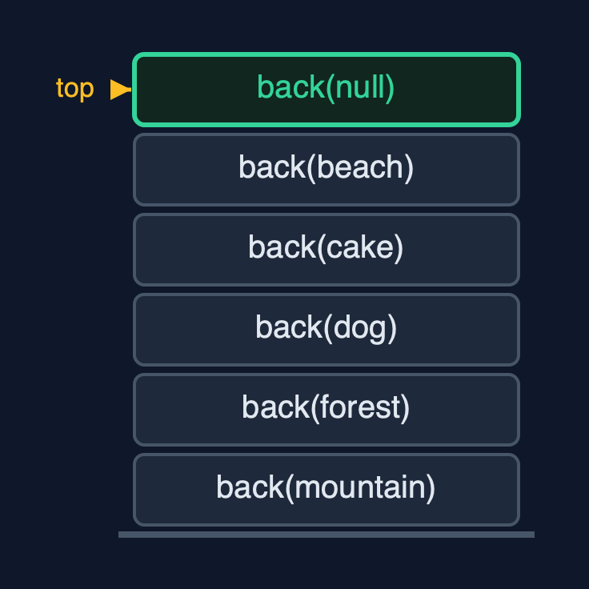

Doubly Linked List (Recursive) — Cheat Sheet
The recursive doubly linked list walks by calling itself on node.next, or on node.prev from the tail; it finds nodes recursively and then links or unlinks them in O(1), and works at both ends with no recursion at all; each walk costs one call-stack frame per node visited.

| What it is | The recursive doubly linked list recurses along next or prev to walk and find, links and unlinks in O(1), and works at both ends without recursion; each walk costs a frame per node. |
| Everyday picture | A train guard who hands the question to the next carriage, in either direction |
| Use it when | Learning how recursion follows pointers in either direction; Short lists, where the recursion depth is small |
| Avoid it when | Long lists: a million nodes overflow the call stack. Use the loops of doubly-linked-list |
| Already in Java | Nothing: java.util.LinkedList uses loops |
Costs
| Operation | What it does | Time: best / average / worst | Extra space (call stack) | Same operation as a loop | Steps counted in the demo |
|---|---|---|---|---|---|
| Display forward / backward | This node, then recurse on next (or prev, from the tail) | O(n) / O(n) / O(n) | O(n) | O(1) | depth 5 each way for 5 photos |
| Count | 0 for null, otherwise 1 + count(node.next) | O(n) / O(n) / O(n) | O(n) | O(1) | 6, depth 6 |
| Insert / delete at beginning or end | Change head or tail and one neighbour: no walk | O(1) / O(1) / O(1) | O(1) | O(1) | depth 0; 3 pointers per insertion |
| Insert at position | Find the node before recursively, then set 4 pointers | O(1) at 0 / O(n) / O(n) | O(pos) | O(1) | depth 2, 4 pointers |
| Delete by key | Find the node recursively, then unlink it with 2 pointers | O(1) / O(n) / O(n) | O(n) | O(1) | depth 3, 2 pointers |
| Search / get | Match here, or recurse on node.next | O(1) / O(n) / O(n) | O(n) | O(1) | 5 comparisons, depth 5 |
| Reverse | Swap prev and next here, recurse on the old next; then swap head and tail | O(n) / O(n) / O(n) | O(n) | O(1) | depth 5, 12 pointer changes |
Compared with related structures
The recursive doubly linked list against the loop version and the recursive singly list (n nodes):
| Operation | Recursive doubly list | Doubly list (loops) | Recursive singly list |
|---|---|---|---|
| Insert / delete at both ends | O(1), no recursion | O(1) | O(1) at the beginning; O(n) time and stack at the end |
| Display backward | O(n) time and stack, from tail | O(n) time, O(1) space | O(n) time and stack, after the call |
| Delete by key | find O(n) stack, unlink O(1) | O(n) time, O(1) space | O(n) time and stack |
| Reverse | O(n) time and stack | O(n) time, O(1) space | O(n) time and stack |
| A million nodes | StackOverflowError | fine | StackOverflowError |
Watch out for
- Recursing on node.next after swapping in reverse: Save the old next before the swap and recurse on it.
- Recursing to reach the tail: Use
tailfor work at the end. - Forgetting to update head or tail when unlinking at an end:
deleteNodemovesheadwhenprevis null andtailwhennextis null. - Recursing over long lists: Use loops for long lists.